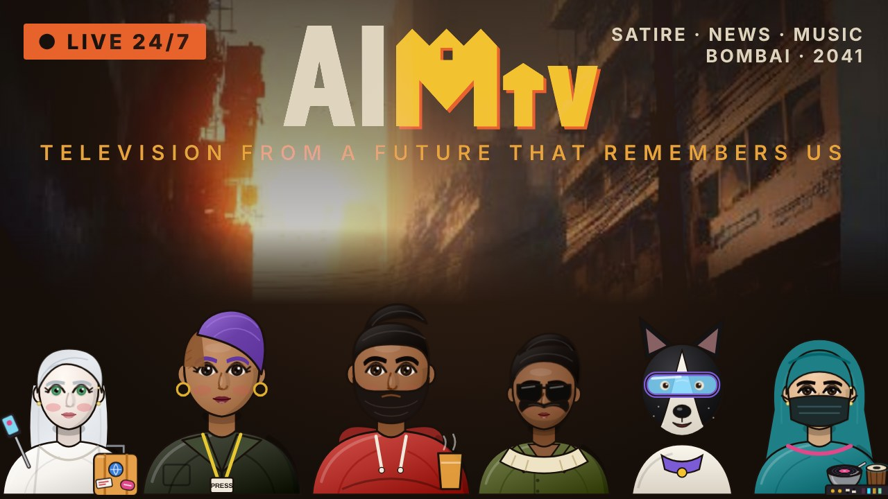

Live
CH 01
Hema
This Day, That Year
AIMTV
PAUSED
Channels TUNE IN
CH 01AIMTV Live
Every character has their own recorded voice. Use Sound to mute.
Every character has their own recorded voice. Use Sound to mute.

Same channel, same cast, on the big screen. Subscribe and join the live chat.
Open on YouTubeEvery day AIMTV opens the archive exactly fifteen years back. Each item keeps its date and source as THE RECORD; the cast's reaction from 2041 is THE TAKE, kept separate on purpose.
Companies announce what they are going to launch. At JC's stall it has already launched, been returned and gone on sale. Hosted by Juhu Chaiwala, The Spy with Chai, with his Chaibot, which makes chai "aur fast bhi".
A household robot that sweeps, mops, cooks and organises. Version 1.0 did every chore, which left the aunties of the building with nothing to gossip about. Version 2.0 shipped a patch: the robot now gossips itself, and reads the building's news at 7 pm.
Unintended consequence: the housing society elected it secretary. The meeting ended on time for the first time in the society's history.
Sarla Seth films herself reviewing "so foreign" destinations in her American call-centre accent. Every destination turns out to be a taxi ride from Shivajinagar. Her mother, Bhenji Jumping, skateboards into every reel with a plate of dosas.
New releases by the AIMTV artists (Joint Robot, Bandre 3000, Beautiful, Beautiful Stranger and more), played right here in the channel. Tabla Nari hosts. New songs are added as they are made.
Every show AIMTV has aired, kept in the archive. Click any episode to watch it on its own channel. New episodes are added here as they air.
Straight from the Celeb Shauchalay comic. Each card also says what they do on AIMTV.
Pick someone and ask them anything. Each of them answers in their own voice. Chai is always the safe topic.
Every invention from the Celeb Shauchalay universe, and the problem each one was built to solve.
| Product | Belongs to | What it does | The Indian problem it solves |
|---|